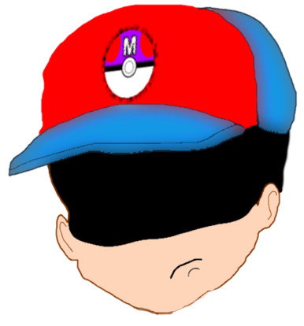
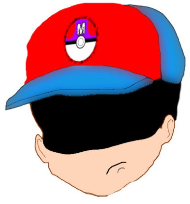

![[ANA JDG] Asterix and the Great Rescue - Megadrive](../vi/6oUXi0ckLmA/default.jpg)
![[ Présentation pour la chaîne Grenier des Joueurs ] JDG Prod](../art/SHAR.6419.583.2.jpg)


Après avoir regardé le trailer français
(🎬https://www.youtube.com/watch?v=iwst-UZn3wM&ab_channel=FilmsActu)
et "Mes THÉORIES sur le FILM MARIO"
( 🎬https://www.youtube.com/watch?v=zOEfCG_JwMw&ab_channel=MisterFlech )
de 🏠@MisterFlech , j'ai écris une théorie de scénario de base.
🔗Disponible aussi sur Wattpad : https://www.wattpad.com/story/324473687-sc%C3%A9nario-th%C3%A9orique-apr%C3%A8s-trailer-super-mario-bros
--------------------------------------------------------------------------
Avant la théorie Bowser a déjà conquit le Royaume des Glaces pour récupérer l'étoile de puissance ? D'où les Toads sont encore joyeux alors que dans 3 mondes, ils sont envahis et Peach capturée ?!
Théorie : Révélation pour la quête
Le manchot-empereur ( ou King Pinguin ), il va arrivé et annoncé que dans 3 jours
( 1 jour par monde pour Bowser et son armée ), Le Royaume Champignon sera détruit.
Théorie : Après la révélation
Toad, Peach et Mario ( à la recherche de son frère ) vont donc utiliser les warpzones pour naviguer plus rapidement entre les mondes, récupérer les items de chaque royaume, retrouver Luigi qui a surpris les zbires de Bowser raconter le plan de ce dernier et repousser avec toute la puissance des frères , de Toad et de Peach l'infâme Koopa.
Théorie : Plot twist
Malheureusement, feignant d'être mort et profitant d'un dos tourné, Bowser kidnappe la Princesse et s'enfuit dans son propre royaume. Le combat finale après une phase où Luigi déprime car même après toute cette aventure, Bowser est toujours aussi puissant, que tout a servit à rien et que... Mario lui fait un câlin, un flashback de jeunesse
( lol, Jeu NES ) et let's go attraper la queue du roi Koopa.
Théorie : La fin
Aaaaaahhhh je brûle, je brûle, mon château s'effondre , aaaaahhhhh
Tout le monde, sauf Bowser, s'échappe du château et la paix est de retour... sauf que Toad est... ah non, en faîtes, il va bien ! Il faisait une pôtite blague comme pendant chaque moment de silence dans ses scènes dans le film ruinant toute tension.
En plus, il coupe la parole à tout le monde, il est insupportable, il aurait dû mourir !
--------------------------------------------------------------------------
Découvrez les contenus animés montrés dans la vidéo
🎬 " [SFM] Mario's NightMare " (https://www.youtube.com/watch?v=PyKBLQgXM_k&ab_channel=NDY ) de @NDY 📜 Pour les plans de bagarres sur fond rouge avec Bowser qui se relève.
🎬 "Mario Sports Superstars - Commercials collection" ( https://www.youtube.com/watch?v=QYf0nyuicz8&ab_channel=vini64 )
📜Pour les plans avec de vrais acteurs japonais.
🎬 "How would Mario Animations look in Unreal Engine?" (https://www.youtube.com/watch?v=hz63bHqdTmY&ab_channel=NDY )
📜Pour le plan avec le tuyau de téléportation.
🎬 "Super Mario Movie Trailer... but better" ( https://www.youtube.com/watch?v=V4oJ62xrFZo&ab_channel=LaughOverLife ) de @Laugh Over Life
📜Pour le plan "Luigi's Mansion" avec un vrai acteur.
🎬 "Super Mario World - La télé réalité" ( https://www.youtube.com/watch?v=pfh4Osj0ONM&ab_channel=TheKillMatta )
📜Pour la première rencontre entre Mario et Bowser : "Salut, tu n'viendrais pas de Jurassic Park ?"
🎬 "Super Mario Brothers Great Mission to Rescue Princess Peach (Japanese Language)" ( j'ai pas retrouvé ma version mais vous avez la meilleure version possible ici : https://youtu.be/vzlZy9zpw0Q de @Kineko Video )
📜Pour le moment de joie entre les frères Mario ainsi que le plan où Mario tire la queue de Koopa pour lui faire percuter le sol.
🎬 "[Restauration VHS] (MISE A JOUR 2018) Mario to Yoshi no Bouken Land" ( https://www.youtube.com/watch?v=wWj63t4lFlc&ab_channel=Cabbusses ), thanks to @Cabbusses
📜Pour le bisou de Peach et le moment où Luigi déprime.
🎬"Les aventures de Super Mario Bros 3 - L'attaque suprise" ( https://www.youtube.com/watch?v=AwFhVjOFm2s&ab_channel=TheKillMatta )
📜 Pour le plan où les frères Mario se font un câlin.
🎬"スーパーマリオ-ももたろう編/Super Mario Amada-Peach Boy Taro 1/2" ( https://www.youtube.com/watch?v=7xPmfG1gO-E&ab_channel=JohnshiBRPG )
📜 Pour le plan où Mario sort d'une pèche !
🎬"Super Mario Bros #6 - Le grand gladiateur" ( https://www.youtube.com/watch?v=LtKIvbaFcFM&ab_channel=AnimationsFR )
📜Pour le "non, tu n'iras nulle part , espèce de champignon !" et le plan de fin.


![[Les Ploucs]Nos p'tites têtes!](../5252/79895252/pics/3253550232_1_3_lB4VQd0P.png)
![[Les Ploucs]Nos p'tites têtes!](../5252/79895252/pics/3253550232_0_5_BZDp1CZZ.png)
![[Les Ploucs]Nos p'tites têtes!](../5252/79895252/pics/3253550232_1_7_oyEwmpqv.png) 

![[Fan-Art]Animes des ploucs](../5252/79895252/pics/3248673604_1_9_ai9CsdN3.gif)
![[Fan-Art]Animes des ploucs](../5252/79895252/pics/3248673604_1_11_19Z5Yejp.gif)
![[Fan-Art]Animes des ploucs](../5252/79895252/pics/3248673604_1_13_hKtzRDLz.gif)
![[Fan-Art]Animes des ploucs](../5252/79895252/pics/3248673604_1_15_1AY2P7zm.gif)

![[Mini-Délire]Master-Leader](../5252/79895252/pics/3230507455_1_6_8g99gAJb.jpg)

![[Jeux-Vidéos]Mario et Sonic s'entendent bien sur un sujet!](../5252/79895252/pics/3214583913_1_2_hfxeXVqL.jpg)


Partage